Integrating Felix with NetBeans
This document explains how to launch Felix inside of the NetBeans IDE, which makes it possible to use NetBeans debugging and profiling facilities on bundles.
Preliminaries
To integrate Felix inside of NetBeans you need Felix and NetBeans and nothing else.
Installing NetBeans
First, you need to download the NetBeans IDE. This tutorial was done using NetBeans 6.1, but it should work on NetBeans 6.0.
Creation of the Felix binaries
To integrate Felix with NetBeans, you have two options:
- Integrate the Felix release as a Java project. This is what we are going to cover in this tutorial.
- Integrateg the Felix release using the Maven plugin. This option is slightly more complex and will be covered in another tutorial.
Using the Felix release as a Java Project
Once, NetBeans is installed, you need to download Felix. Choose the binary Felix release in your preferred archive format. Extract the release into a temporary directory. We will copy the files into our project later.
Building and using the Felix trunk
If you want to use the Felix trunk, follow the instructions on the Felix web site to checkout and build the trunk. The Felix binaries are created in the "main" project directory. We will copy these files into our project later.
Using Felix with NetBeans
This integration tutorial uses a Java project for the integration. This new project will contain Felix. In the following sections it will be explained how to do this.
Creation of a Felix Java project
First launch NetBeans. Then click on "File->New->Project..." menu entry as shown in Figure 1.
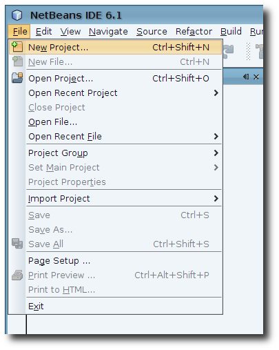
This action will launch the project creation wizard. From the "Categories" list choose "Java" and from the "Projects" list choose "Java Application" as shown in Figure 2, then press the "Next >" button.
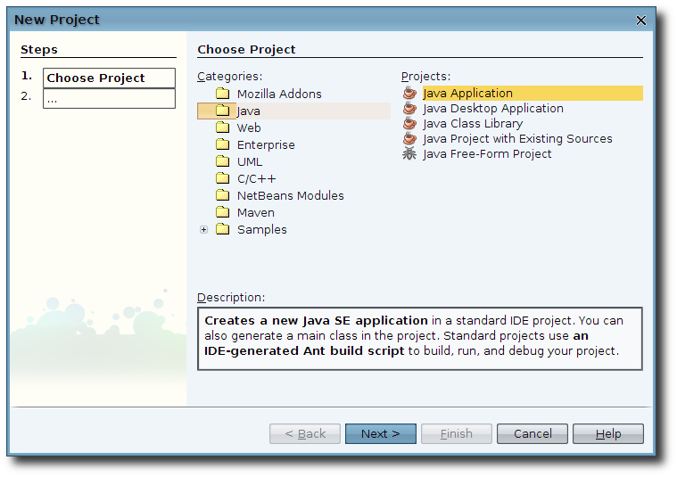
Enter the project name ("Felix" for example), select your project directory, and uncheck the "Create Main Class" check box then press the finished button. See Figure 3.

Copying Felix to the newly created project
Now, remember where you extracted the Felix release or, if you built from source, where the Felix main subproject directory is. Go into the release directory or the main subproject directory and copy its entire contents into your project directory. You can do this any way that is easiest for you. On a Linux box you would do something like this from inside the appropriate release or main directory:
cp -r ./* /project-path/
Where "/project-path/" is the path to your project directory.
Once you have copied the files, collapse and expand the project. This will make NetBeans refresh the project. If that does not work for you (on NetBeans 6.0 it may not) just close and open it.
Preparing the Felix project
The first thing you will notice is that our new project has a red exclamation point on it. What this means is that when NetBeans parsed the Java files it could not find all the library dependencies, so let's fix that.
Right-click on the newly created project and select the properties as shown in Figure 4.
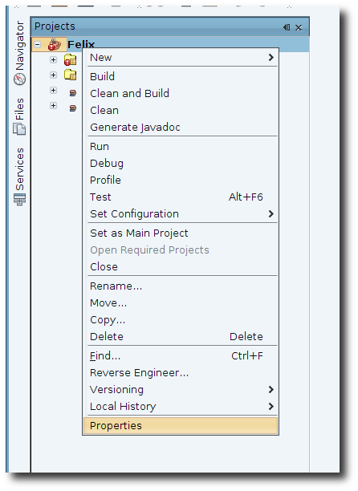
This will bring up the project properties dialog. Select Libraries as shown in Figure 5.
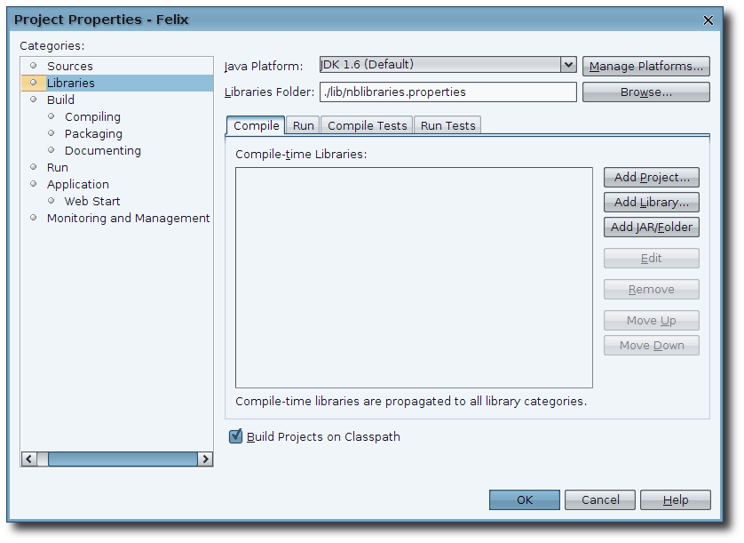
Now we want to press the "Add JAR/Folder" button and navigate to your project directory/bin and select the "felix.jar" as shown in Figure 6. NOTE: Make sure the "Use Relative Path" radio button is selected. Then press the "Open" button.
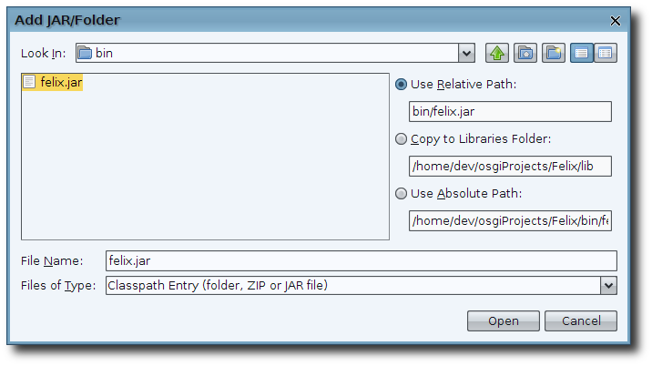
Your libraries panel should now look like what is shown in Figure 7. You can now press the "OK" button.
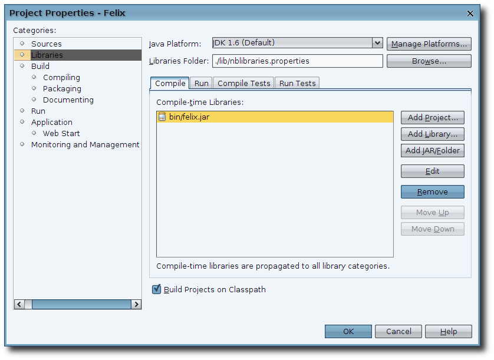
At this point the red exclamation point should should disappear and now we can run Felix. Right click on the project node and select the "Run" menu item as shown in Figure 8.
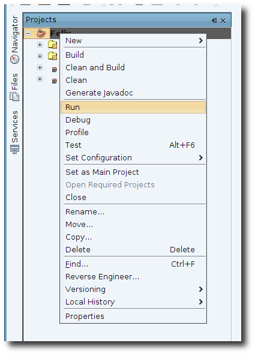
When you do this the "Run Project" dialog will pop-up with a list of all class files with a main method. In our case this will only show the "org.apache.felix.main.Main" class so we select that and press the "OK" button. The "Run Project" dialog is shown in Figure 9.
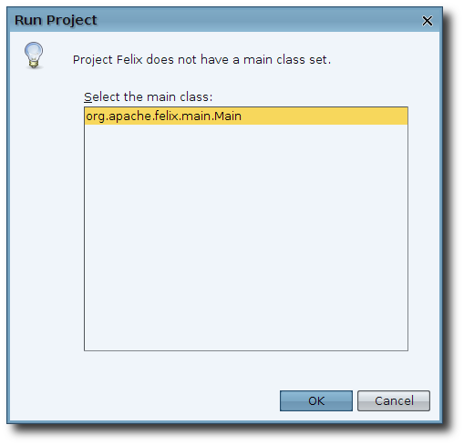
After you press the "OK" button in the "Run Project" dialog, Felix will be launched and the output window will open with the Felix command line tool running as shown in Figure 10.
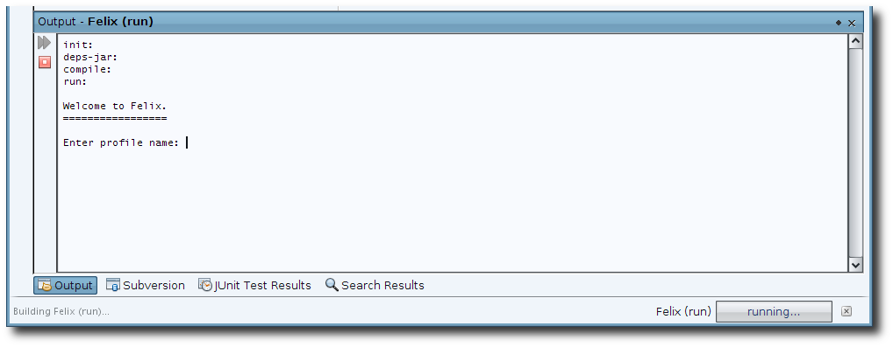
At this point you can enter your preferred profile and interact with Felix as if you had launched Felix from a command line shell.
Re-launching Felix
Now that our project is all set up, you only have to select the Run menu item from the project context menu to re-launch Felix. Or if you prefer, if you set Felix as the main project, then you can use "Run" menu on the main menubar.
Felix Configuration
At this point, you may want to make some changes to the way Felix is configured. In NetBeans you will have to open the "Files" view. Expand the Felix folder and then the "conf" folder as shown in Figure 11. NOTE: When you do this the first time the cache folder will not be there. If you decide to make the configuration changes shown in the next section then it will be created the next time you run Felix.
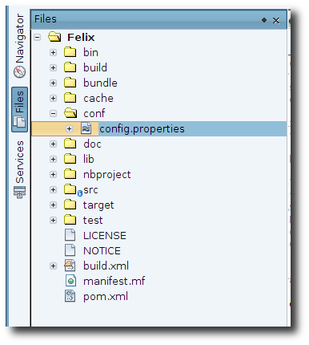
Configure the Felix cache location
Felix stores profiles and deployed bundles inside a cache. Normally this cache is located at "$userhome/.felix". It is possible to change this location in order to clean it quickly and also to keep your development cache separated from other Felix-based applications you may be running on your computer. You may also want to set a default profile so you don't have to enter it every time you launch Felix.
Open the configuration file, called "config.properties". Then, add a new line with "felix.cache.dir=cache" (see Figure 12). And if you want to set a default profile, uncomment the "felix.cache.profile=foo" line and change it to what you want (Figure 12). To clean your cache, just delete the cache directory.
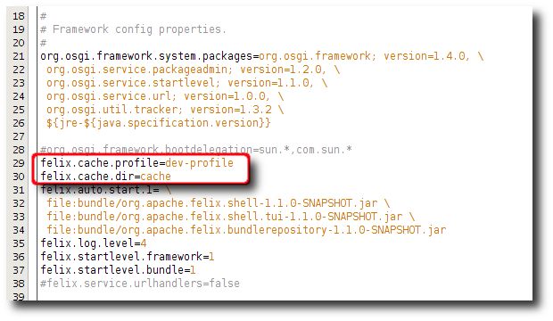
The next time you run Felix, the cache directory will be created with in your project. To verify that it did or if you want to clean it use the "Files" view to expand the Felix folder; you should now see a cache folder that was not there before. You can refer to Figure 11 which displays the cache directory from a previous execution of Felix.
Add auto-started bundles
Often you will want Felix to automatically deploy some bundles that you need for your development. You can do this by modifying the "felix.auto.start.1" (or 2) property in the "config.properties" file. For more information on configuring Felix, refer to Felix' usage document.
When editing this property, the bundles can be relative or absolute file paths to the bundles you want to auto load. Also don't forget to put the line continuation marker "\" and the end of each line except the last one. In figure 13 you can see the default configuration that is shipped with Felix.
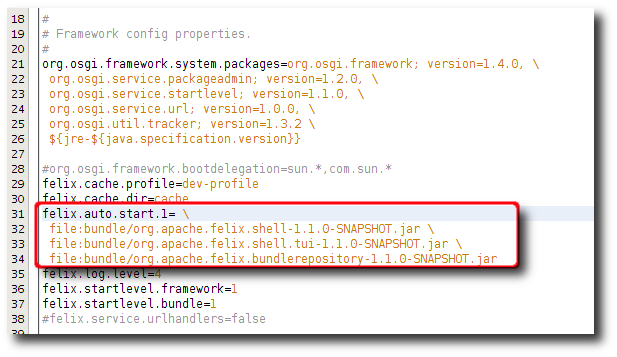
Debugging bundles
Now that we are able to launch Felix as a Java Application we can use the debugging and profiling features of NetBeans. Future tutorials will go into more detail on how to do this.
Conclusion
This document has presented one way in which you can integrate Felix with NetBeans. For any questions or feedback, subscribe to the Felix users mailing list by sending a message to users-subscribe@felix.apache.org; after subscribing, email questions or feedback to users@felix.apache.org.